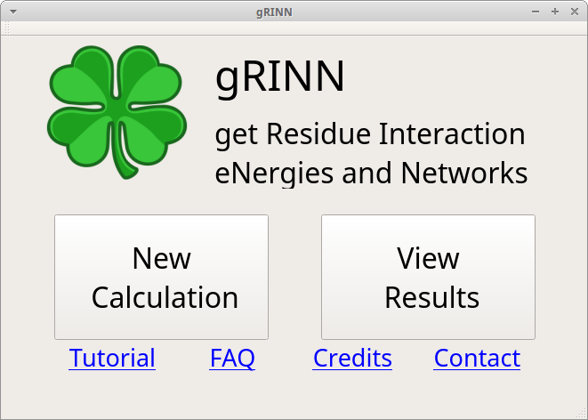

Tutorial¶
Dependencies¶
gRINN was designed to work with NAMD or GMX-generated MD simulation trajectories, hence topology, structure and trajectory files are expected. Moreover, the tool interoperates with NAMD or GMX -depending on which type of input data you give as input-, so you will need to provide the location of the NAMD or GROMACS(gmx) executable you’ve used for simulation prior to the start of calculation.
Since you’re interested in using this tool, you’re probably already a user of either NAMD or GROMACS; however, if the executable is for some reason not installed/located on your system or if you’re just interested in trying out the tool, you should obtain and install them from the respective developers as we can’t distribute them ourselves. Download NAMD here. Download GROMACS here. Please note that downloading NAMD requires registration. Recommended versions are NAMD 2.12b and GROMACS 5.1.4 (although we expect any NAMD version above 2.9 and any GROMACS 5.x version to work fine with gRINN)
Preparing input data (for NAMD-generated trajectories)¶
In this tutorial, we will use sample NAMD data from a short MD simulation of the trypsin enzyme. Therefore, this step is not required for completing the tutorial. You are, however, advised to delete solvent molecules from your input Protein Data Bank (PDB), Protein Structure File (PSF) and DCD files before using gRINN with your own data.
Due to the way gRINN interoperates with NAMD, deleting solvent molecules from the input PSF/PDB and DCD files is usually necessary before using the tool. gRINN does not offer such functionality, however this can be done using standart software such as VMD.
If you have used psfgen or VMD’s Autopsf plug-in, usually the first PSF/PDB pair generated during system preparation for MD simulation prior to solvation step is what you need. The only step that you need to do is to remove the solvent from the DCD trajectory file. This can done by loading the trajectory into VMD and saving the coordinates of only the “protein” into a new DCD file.
Start the Application¶
If you have not done already, start gRINN by following the steps below:
- Download the archive suitable for your OS (currently only Linux and Mac OSX is supported) and extact the contents to a folder of your choice.
- For Linux: open a terminal in that directory and start gRINN by typing
./grinn. Alternatively, you can navigate to another directory, open a new terminal and start grinn by typing the full path of grinn. - For Mac OSX: simply double-click the extracted application bundle. If that fails, follow the steps for Linux.
gRINN Main Window¶
Upon execution of grinn, the following window appears:

This is the main window of gRINN. Several links at the bottom direct the user to respective sections of this website.
gRINN offers two interfaces: New Calculation and View Results. New Calculation is used for pairwise residue interaction energy and interaction energy correlation calculations and offers several options for customizing calculation parameters. View Results is used to visualize results from New Calculation and construct Protein Energy Networks using these data.
Go ahead and click on New Calculation now.
gRINN New Calculation (Get Residue Interaction Energies)¶
You should now see a window like the following.

This is the “New Calculation” interface. gRINN New Calculation is used to
- specify input files, NAMD/GMX executables and other custom calculation settings
- start a interaction energy and/or correlation calculations
- monitor the progress of computation
- view the results once the calculation is complete.